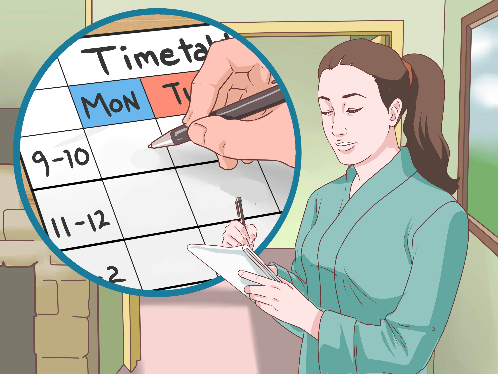

1. Pick a place and time
Everyone has their own idea about the best place and time to study. Whether it's your bedroom at night or the library after school, find a study space and a regular study time that works for you and stick with it.
- Set up your study space – Your study space should be quiet, comfortable and distraction-free. It should make you feel happy and inspired. Decorate it with your favourite pictures or objects. If you want to listen to music or burn incense, pick a space that lets you do that.
- Find your best time – Some people work better in the morning. Others work better at night. Work out which time suits you and plan to study then. Don't study much later than your usual bedtime – pushing yourself late at night can make you too tired to study properly.

2. Study every day
If you study a little bit every day you'll be continually reviewing things in your mind. This helps you understand things. It also helps you avoid the stress of last-minute cramming.
Early in the year an hour or two a night might be enough to stay on top of things. Later in the year you might need to study more each day.
3. Plan your time
It helps to have some plans in motion so you can make the most of your study time.
- Set alarms – Set alarms to remind you about your study plans. A regular reminder keeps you honest and your plans on track.
- Use a wall planner – Stick a calendar or wall planner up so you can see it whenever you're studying. Mark it up with important dates, like exams and assignment due dates. Use it to block out your regular study timetable too.
- Make to-do lists – Lists break tasks down into manageable chunks. At the start of the week, make a list of the things that you need to have done by the end of the week. Make a to-do list at the start of each study session too, so that you're clear about what you need to be doing with your time.
- Set time limits – Before you start your study session, have a look at your to-do list and give yourself a set time to spend on each task. If you don't get something done in the set time, consider whether it's the best use of your time to keep going with it, or to start working on something else.
4. Discover your learning style
Most of us have a preferred way of learning. Get to know the learning style you're most comfortable with and study in the ways you learn best.
- Auditory learners prefer to learn by listening. Try reading your notes aloud and discussing them with other people. You might like to record key points and play them back.
- Visual learners prefer to learn by seeing. Try using colours in your notes and draw diagrams to help represent key points. You could try to remember some ideas as images.
- Tactile/kinesthetic learners prefer to learn by doing. Try using techniques like role-playing or building models to revise key points.
5. Review and revise
At least once a week you should go back over the things you've studied in class. Thinking things over can help you to understand the concepts and help you remember when you need them the most.
- Quiz – Get a friend or family member to quiz you on key concepts. Offer to help your friends with their work too. Quizzes are great ways to get confident about what you know and find out what you still need to learn.
- Make your own study materials – Think up some practice exam questions or create your own flash cards to help you study. This way you learn it all twice: once when you make the study materials and once when you use them to revise.
6. Take breaks
It's important to take breaks while you're studying, especially if you're feeling tired or frustrated. Working too long on a task can actually decrease your performance.
When you take a break, make sure you get away from your desk or study space. A bit of physical – even just a walk around the block – can sometimes help you to look at a problem in a different way and could even help you to solve it.
7. Stay motivated
When you're studying it helps to keep in mind your reasons for doing all this hard work, like a course or career you're working towards. It can help to have something in your study space to remind you of your goals.
You could also decorate your study space with inspirational quotes or photos of people you admire and family members you want to make proud of you.

8. Make your own notes
Whatever you have read from the book or from anyehere else that is a extended content.You can make it small and more understable by making it brief.The content can be made by making your own notes in your own hand writing.
9. Now come up with your own strategies
These tips are only some of the things you can do to get the most out of your studying. You might already have other things that work better for you. Find out what your friends do when they're studying. Maybe your teachers have some good recommendations too.